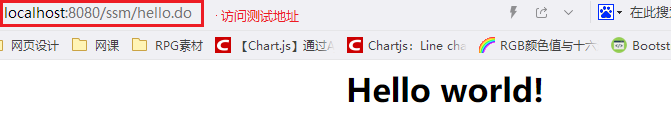

SpringMVC之Hello World

文章目录
开发环境
- IDEA下的Maven项目
- JDK 1.8_0211
- Tomcat 8.5.38
项目依赖
为了方便以后的学习，我直接加入了SSM项目的所有依赖，从而包括Spring和Mybatis等。具体的依赖配置如下（Maven的pom.xml配置）：
1 2 3 4 5 6 7 8 9 10 11 12 13 14 15 16 17 18 19 20 21 22 23 24 25 26 27 28 29 30 31 32 33 34 35 36 37 38 39 40 41 42 43 44 45 46 47 48 49 50 51 52 53 54 55 56 57 58 59 60 61 62 63 64 65 66 67 68 69 70 71 72 73 74 75 76 77 78 79 80 81 82 83 84 85 86 87 88 89 90 91 92 93 94 95 96 97 98 99 100 101 102 103 104 105 106 107 108 109 110 111 112 113 114 115 116 117 118 119 120 121 122 123 124 125 126 127 128 129 130 131 132 133 134 135 136 137 138 139 140 141 142 143 144 145 146 147 148 149 150 151 152 153 154 155 156 157 158 159 160 161 162 163 164 165 166 167 168 169 170 171 172 173 174 175 176 177 178 179 180 181 182 183 184 185 186 187 188 189 190 191 192 193 194 195 196 197 198 199 200 201 202 203 204 205 206 207 208 209 210 211 |
<?xml version="1.0" encoding="UTF-8"?>
<project xmlns="http://maven.apache.org/POM/4.0.0" xmlns:xsi="http://www.w3.org/2001/XMLSchema-instance"
xsi:schemaLocation="http://maven.apache.org/POM/4.0.0 http://maven.apache.org/xsd/maven-4.0.0.xsd">
<modelVersion>4.0.0</modelVersion>
<groupId>com.company.struct</groupId>
<artifactId>artifact</artifactId>
<version>1.0-SNAPSHOT</version>
<packaging>war</packaging>
<name>artifact Maven Webapp</name>
<!-- FIXME change it to the project's website -->
<url>http://www.example.com</url>
<properties>
<project.build.sourceEncoding>UTF-8</project.build.sourceEncoding>
<maven.compiler.source>1.7</maven.compiler.source>
<maven.compiler.target>1.7</maven.compiler.target>
<!-- spring的版本 -->
<spring.version>5.1.5.RELEASE</spring.version>
<!-- mybatis的版本 -->
<mybatis.version>3.4.6</mybatis.version>
<!-- mybatis/spring包 -->
<mybatis-spring.version>1.3.2</mybatis-spring.version>
<!-- servlet核心包 -->
<servlet-api.version>4.0.1</servlet-api.version>
<!-- slf4j日志文件管理包版本 -->
<slf4j.version>1.7.1</slf4j.version>
</properties>
<!-- 各种依赖包-->
<dependencies>
<dependency>
<groupId>junit</groupId>
<artifactId>junit</artifactId>
<version>4.11</version>
<!-- 表示开发的时候引入，发布的时候不会加载此包 -->
<scope>test</scope>
</dependency>
<!--spring核心包-->
<dependency>
<groupId>org.springframework</groupId>
<artifactId>spring-context</artifactId>
<version>${spring.version}</version>
</dependency>
<dependency>
<groupId>org.springframework</groupId>
<artifactId>spring-core</artifactId>
<version>${spring.version}</version>
</dependency>
<dependency>
<groupId>org.springframework</groupId>
<artifactId>spring-beans</artifactId>
<version>${spring.version}</version>
</dependency>
<dependency>
<groupId>org.springframework</groupId>
<artifactId>spring-context-support</artifactId>
<version>${spring.version}</version>
</dependency>
<dependency>
<groupId>org.springframework</groupId>
<artifactId>spring-aop</artifactId>
<version>${spring.version}</version>
</dependency>
<dependency>
<groupId>org.springframework</groupId>
<artifactId>spring-aspects</artifactId>
<version>${spring.version}</version>
</dependency>
<dependency>
<groupId>org.springframework</groupId>
<artifactId>spring-expression</artifactId>
<version>${spring.version}</version>
</dependency>
<dependency>
<groupId>org.springframework</groupId>
<artifactId>spring-jdbc</artifactId>
<version>${spring.version}</version>
</dependency>
<dependency>
<groupId>org.springframework</groupId>
<artifactId>spring-orm</artifactId>
<version>${spring.version}</version>
</dependency>
<dependency>
<groupId>org.springframework</groupId>
<artifactId>spring-tx</artifactId>
<version>${spring.version}</version>
</dependency>
<dependency>
<groupId>org.springframework</groupId>
<artifactId>spring-web</artifactId>
<version>${spring.version}</version>
</dependency>
<dependency>
<groupId>org.springframework</groupId>
<artifactId>spring-webmvc</artifactId>
<version>${spring.version}</version>
</dependency>
<!--mybatis包-->
<dependency>
<groupId>org.mybatis</groupId>
<artifactId>mybatis</artifactId>
<version>${mybatis.version}</version>
</dependency>
<!-- mybatis/spring包 -->
<dependency>
<groupId>org.mybatis</groupId>
<artifactId>mybatis-spring</artifactId>
<version>${mybatis-spring.version}</version>
</dependency>
<!-- mysql数据库 -->
<dependency>
<groupId>mysql</groupId>
<artifactId>mysql-connector-java</artifactId>
<version>5.1.31</version>
</dependency>
<dependency>
<groupId>com.mchange</groupId>
<artifactId>c3p0</artifactId>
<version>0.9.5.2</version>
</dependency>
<!-- 添加servlet核心包 -->
<dependency>
<groupId>javax.servlet</groupId>
<artifactId>javax.servlet-api</artifactId>
<scope>provided</scope>
<version>${servlet-api.version}</version>
</dependency>
<!--
格式化对象，方便输出日志,可以将bean转为json，也可以反转
-->
<dependency>
<groupId>com.alibaba</groupId>
<artifactId>fastjson</artifactId>
<version>1.2.47</version>
</dependency>
<!--
日志文件管理包
slf4j-log4j12 是slf4j与日志log4j的整合jar包，
这个jar包会自动引入其log4j-1.2.17.jar的实现jar ，
因此项目中pom.xml引入slf4j-log4j12的依赖即可
-->
<dependency>
<groupId>org.slf4j</groupId>
<artifactId>slf4j-log4j12</artifactId>
<version>${slf4j.version}</version>
</dependency>
<!-- 引入jstl-->
<!-- 需要注意，有的web.xml版本会屏蔽El表达式，需要手动开启，或者web.xml中声明-->
<dependency>
<groupId>javax.servlet</groupId>
<artifactId>jstl</artifactId>
<version>1.2</version>
</dependency>
<dependency>
<groupId>taglibs</groupId>
<artifactId>standard</artifactId>
<version>1.1.2</version>
</dependency>
</dependencies>
<build>
<finalName>artifact</finalName>
<pluginManagement><!-- lock down plugins versions to avoid using Maven defaults (may be moved to parent pom) -->
<plugins>
<plugin>
<artifactId>maven-clean-plugin</artifactId>
<version>3.1.0</version>
</plugin>
<!-- see http://maven.apache.org/ref/current/maven-core/default-bindings.html#Plugin_bindings_for_war_packaging -->
<plugin>
<artifactId>maven-resources-plugin</artifactId>
<version>3.0.2</version>
</plugin>
<plugin>
<artifactId>maven-compiler-plugin</artifactId>
<version>3.8.0</version>
</plugin>
<plugin>
<artifactId>maven-surefire-plugin</artifactId>
<version>2.22.1</version>
</plugin>
<plugin>
<artifactId>maven-war-plugin</artifactId>
<version>3.2.2</version>
</plugin>
<plugin>
<artifactId>maven-install-plugin</artifactId>
<version>2.5.2</version>
</plugin>
<plugin>
<artifactId>maven-deploy-plugin</artifactId>
<version>2.8.2</version>
</plugin>
</plugins>
</pluginManagement>
</build>
</project> |
可以看到，我的Spring的版本为5.1.5.RELEASE。这里我配置了JSTL，有一个小坑，就是JSTL要和standard配合引入才能用。此外后面还有一个坑：有的web.xml的版本关闭了EL表达式，所以我们使用EL表达式的时候需要开启（在jsp里），开启方法为添加：<%@ page isELIgnored=“false”%>
过程
配置前端控制器
前端控制器作为所以的请求的入口，当然是在web.xml里配置嘛（毕竟服务器只认识web.xml）。这里直接贴上我的配置文件：
1 2 3 4 5 6 7 8 9 10 11 12 13 14 15 16 17 18 19 20 21 22 |
<!DOCTYPE web-app PUBLIC
"-//Sun Microsystems, Inc.//DTD Web Application 2.3//EN"
"http://java.sun.com/dtd/web-app_2_3.dtd" >
<web-app>
<display-name>SSM</display-name>
<!-- 配置springMVC前端控制器 -->
<servlet>
<servlet-name>springMVC</servlet-name>
<servlet-class>org.springframework.web.servlet.DispatcherServlet</servlet-class>
<!--如果不配置contextConfigLocation，默认加载的是/WEB-INF/servlet名称-serlvet.xml（springmvc-servlet.xml-->
<init-param>
<param-name>contextConfigLocation</param-name>
<param-value>classpath:spring/springMVC.xml</param-value>
</init-param>
<load-on-startup>1</load-on-startup>
</servlet>
<servlet-mapping>
<servlet-name>springMVC</servlet-name>
<!-- 所有请求将被拦截，包括静态文件，所以需要放行 -->
<url-pattern>/</url-pattern>
</servlet-mapping>
</web-app> |
这里需要注意的是前端控制器的url-pattern，我写的是/，意思是拦截所有请求(不包括jsp文件的请求)。当然，可以使用通配符，网上概括了，分为啥子路径匹配和扩展名匹配，然后一大堆讲解，其实我归结为一句话： 通配符只能存在于两端 ，意思是像“/usr/*.action”由于通配符在中间，所以是错误的。然后最最重要的一点，也是网上80%的人说错的，剩余的15%的人讲不清的一个问题： “/”和“/*”的区别是啥？ 真的你要是到网上去搜，可以说就是一个答案复制来复制去，结果这个答案还是错的，真**操蛋！
首先要明白一点就是，服务器自己也有url匹配，比如你的webapp下有个index.jsp，然后你输入：http://localhost:8080/xx/index.jsp(xx是你的项目名)，服务器会根据这个url匹配到index.jsp，此所谓是服务器自己的匹配模式，但是，如果你的前端控制器的匹配模式设置成“/*”，就会覆盖服务器自己的匹配模式，也就是说你访问http://localhost:8080/xx/index.jsp会被SpringMVC拦截，而不是被服务器拦截，SpringMVC根据你的url去查找 名为index.jsp的控制器 ，当然找不到（应为你本想让他直接访问index.jsp这个视图，根本没有创建渲染视图的控制器），所以报错。然后， “/”不会覆盖服务器自己的匹配模式 ，所以你直接访问视图，还是会被服务器的匹配模式拦截，从而访问到，根本没有进入SpringMVC，但是此种方式会被SpringMVC拦截静态文件，所以需要手动放行。最后，推荐使用 严格的MVC模式 ，意思是 视图不能直接被访问 ，视图全部放在WEB-INF下，要经过控制器渲染才能访问。
配置控制器映射器
我在web.xml中指明了SpringMVC的配置文件放在resouce下的spring目录下，所以直接在此目录中用IDEA创建一个Spring的xml配置文件的基本模板springMVC.xml，然后复制下面的控制器映射器配置进去即可：
1 2 3 4 |
<!-- 配置处理器映射器--> <!-- 需要将编写的controller在spring容器中进行配置，且指定bean的name为请求的url,且以/开头--> <!-- BeanNameUrlHandlerMapping是SpringMVC默认的控制器映射器，可以不配置--> <bean class="org.springframework.web.servlet.handler.BeanNameUrlHandlerMapping" /> |
配置控制器适配器
同样复制下面的配置过去：
1 2 3 |
<!-- 控制器适配器--> <!-- SimpleControllerHandlerAdapter需要控制器实现org.springframework.web.servlet.mvc.Controller接口--> <bean class="org.springframework.web.servlet.mvc.SimpleControllerHandlerAdapter" /> |
开发控制器
我在项目中创建包：com.test.ssm.web.controller，然后在此包中通过实现接口org.springframework.web.servlet.mvc.Controller来创建控制器TestController，具体的代码如下：
1 2 3 4 5 6 7 8 9 10 11 12 13 14 15 16 |
package com.test.ssm.web.controller; import org.springframework.web.servlet.ModelAndView; import org.springframework.web.servlet.mvc.Controller; import javax.servlet.http.HttpServletRequest; import javax.servlet.http.HttpServletResponse; public class TestController implements Controller { @Override public ModelAndView handleRequest(HttpServletRequest httpServletRequest, HttpServletResponse httpServletResponse) throws Exception { ModelAndView modelAndView=new ModelAndView(); //填充数据 modelAndView.addObject("info","Hello world!"); //设置视图名 modelAndView.setViewName("hello"); return modelAndView; } } |
其中的modelAndView.setViewName(“hello”);就是设置逻辑视图名，等下给SpringMVC的视图解析器根据逻辑视图名找到物理视图名。
配置控制器
配置如下：
1 2 3 |
<!-- 配置控制器--> <!-- 注意：虽然写了控制器，但是需要在Spring容器中注册写了的控制器，此外，和BeanNameUrlHandlerMapping适配器搭配，则name需要以/开头--> <bean name="/hello.do" class="com.test.ssm.web.controller.TestController" /> |
Notice：和控制器适配器BeanNameUrlHandlerMapping搭配使用，适配器将通过以上配置的name属性找到控制器。
配置视图解析器
配置如下：
1 2 3 4 5 6 |
<!-- 配置视图解析器-->
<bean class="org.springframework.web.servlet.view.InternalResourceViewResolver">
<property name="viewClass" value="org.springframework.web.servlet.view.JstlView"/>
<property name="prefix" value="/WEB-INF/jsp/"/>
<property name="suffix" value=".jsp"/>
</bean> |
Notice：prefix就是物理视图的前缀，suffix就是物理视图的后缀，比如前面我的控制器返回的逻辑视图名为hello，那么此处视图解析器解析出的物理视图为“/WEB-INF/jsp/hello.jsp”，然后viewClass意思是返回的是什么类型的视图，我因为等下要用JSTL，所以必须指定为JstlView。
视图开发
就创建一个hello.jsp在WEB-INF/jsp下，代码如下：
1 2 3 4 5 6 7 8 9 10 11 12 13 |
<%@ page contentType="text/html;charset=UTF-8" language="java" %>
<%@ taglib prefix="c" uri="http://java.sun.com/jstl/core" %>
<%@ page isELIgnored="false"%>
<html>
<head>
<title>hello World</title>
</head>
<body>
<center>
<h1>${requestScope.info}</h1>
</center>
</body>
</html> |
结果测试
启动服务器后，浏览器访问http://localhost:8080/ssm/hello.do（我的项目名叫ssm），结果如下：

文章作者 P1n93r
上次更新 2019-07-25